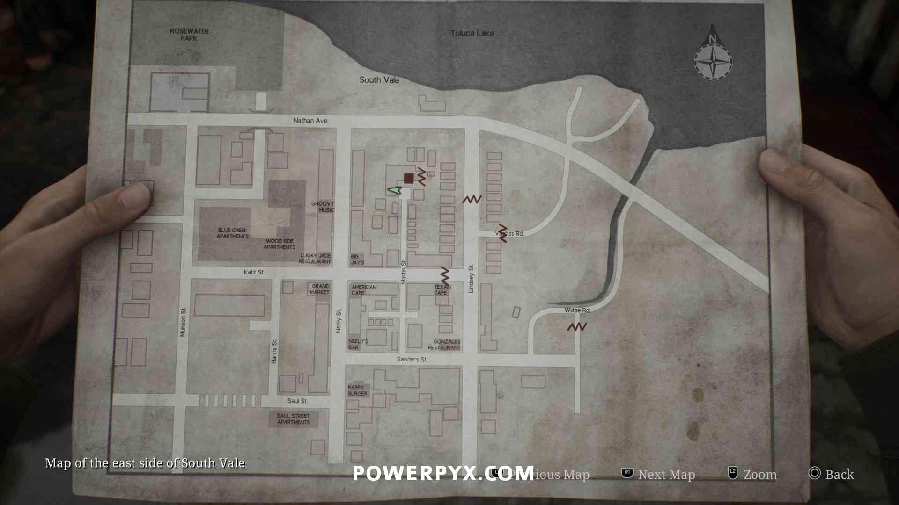
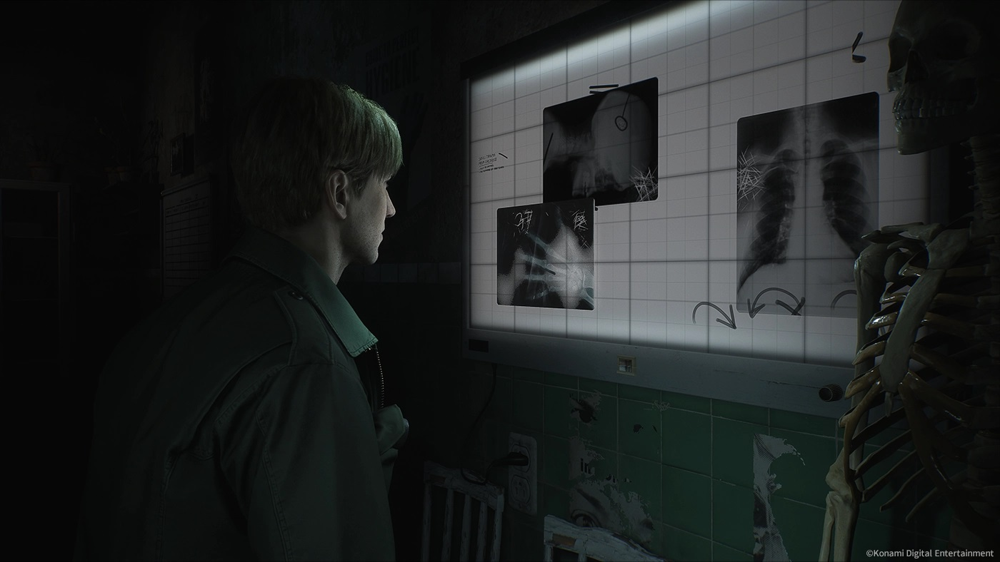
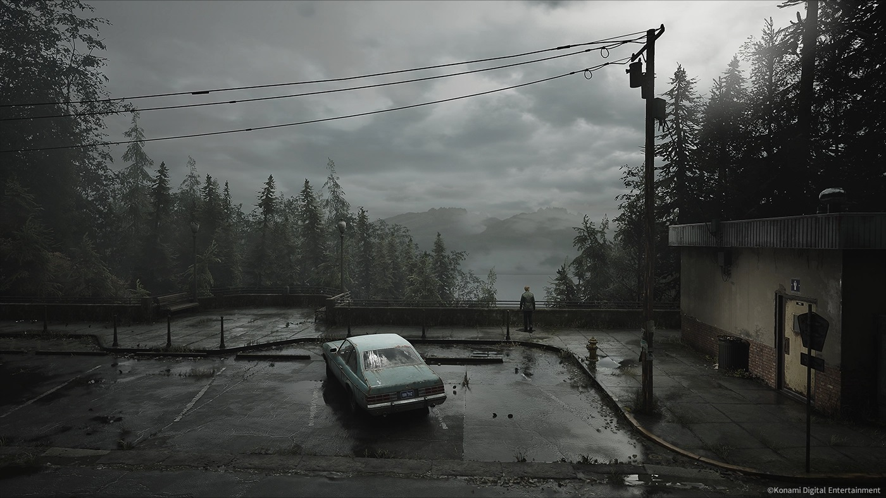

Pueblo de Silent Hill
El pueblo de Silent Hill es el escenario principal del juego.
Es un lugar envuelto en niebla, lleno de misterios y criaturas aterradoras.
Cada rincón del pueblo esconde secretos relacionados con el pasado de James y los pecados que debe enfrentar.
Hospital Brookhaven
Este hospital es uno de los lugares más inquietantes del juego.
Lleno de enfermeras deformes y moustros de todo tipo, el Hospital Brookhaven es un reflejo de la mente fragmentada y retorcida de James.
En donde la realidad y las pesadilla de el se entrelazan.
Lago Toluca
El Lago Toluca es un lugar importante en la historia de Silent Hill.
Es el sitio donde James y Mary pasaron buenos momentos, pero también es donde la oscuridad del pueblo parece
ser más profunda y donde los secretos del pasado de James salen a la superficie.